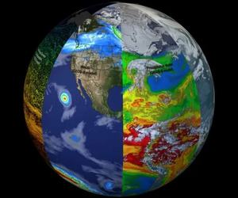
Earth System Trend DetectiveAvanzado
Elegir variables de las misiones de ciencia terrestre, ver cómo cambian con el tiempo y detectar qué cambia, dónde y si el cambio es significativo.
Ciencia de la Tierra · Software
Participo en el NASA Space Apps Challenge 2026.
Ver los retos¡Estamos desarrollando software!
El NASA Space Apps Challenge es el hackathon más grande del mundo. Miles de equipos en casi todos los países dedican un fin de semana a resolver problemas reales con datos abiertos de la NASA.
Este año corre el sábado 14 y el domingo 15 de noviembre. La ventana para entregar proyectos abre a las 9:00 del sábado y cierra a las 23:59 del domingo, siempre en hora local.
Los equipos pueden tener hasta seis personas. Todavía no tengo reto elegido: quiero armar equipo primero y decidirlo juntos.
Mientras llega el día, esta página hace la cuenta. Cuando arranque, el proceso se contará en el diario.
Se cuenta mejor en un episodio del podcast:
Despacio que tengo prisa · episodio completo
Earth System Trend DetectiveAvanzado
Elegir variables de las misiones de ciencia terrestre, ver cómo cambian con el tiempo y detectar qué cambia, dónde y si el cambio es significativo.
Ciencia de la Tierra · Software
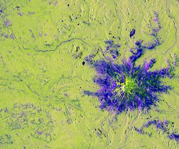
Dancing with the SARsAvanzado · Intermedio
Una aplicación interactiva que usa el radar NISAR para seguir y visualizar cambios en la superficie: humedales, incendios, glaciares.
Ciencia de la Tierra
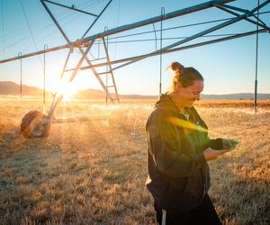
Field ShiftAvanzado · Intermedio
Herramienta de apoyo a la decisión que cruza observaciones de la NASA con el suelo y las prioridades del agricultor para explorar rotaciones.
Arte y multimedia · Ciencia de la Tierra · Software
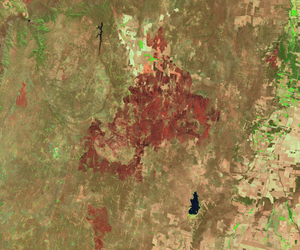
MODIS + VIIRS Hot SpotsAvanzado · Intermedio
Armonizar más de veinte años de focos de calor registrados por dos satélites en un solo calendario de quema para la alerta temprana.
Ciencia de la Tierra · Software
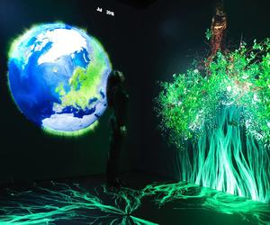
The Earth Information JukeboxIntermedio · Principiante
Traducir las visualizaciones del Earth Information Center a sonido generado en tiempo real: sonificar el planeta.
Arte y multimedia · Ciencia de la Tierra · Software
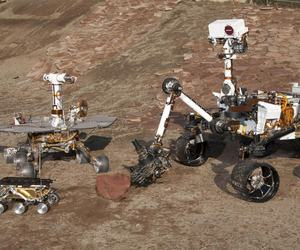
Abandoned but not ForgottenIntermedio · Principiante
Contar la historia del hardware que la NASA dejó en la Luna, en Marte y en el espacio profundo, para lectores en edad escolar.
Astrofísica · Planetas y lunas · Exploración
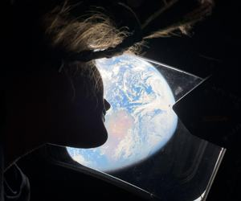
Junior Astronaut Mission TrainerIntermedio · Principiante
Un juego donde estudiantes administran una base lunar o marciana equilibrando soporte vital, blindaje, energía y comida.
Juegos · Planetas y lunas · Software
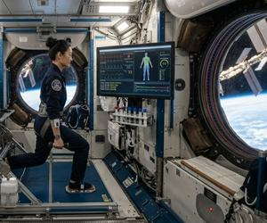
Health Monitoring for AstronautsIntermedio
Software que reúne indicadores de salud para que un astronauta en misión larga pueda evaluarse y actuar a tiempo.
Exploración humana · Software
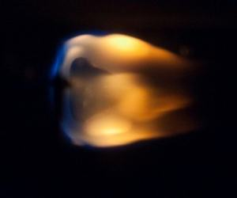
Flame in FreefallAvanzado · Intermedio
Un panel con inteligencia artificial que resume e interpreta décadas de datos de combustión en microgravedad para la seguridad contra incendios.
Exploración espacial
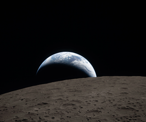
Moon Base AnalogsAvanzado · Intermedio · Principiante
Encontrar lugares de la Tierra análogos a sitios de futuras bases lunares o marcianas, usando datos abiertos de varias agencias.
Ciencia de la Tierra · Planetas y lunas · Software
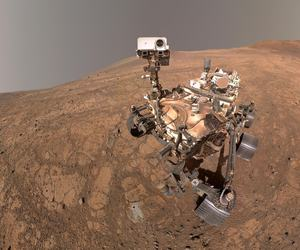
Martian MapIntermedio
Un mapa en capas de una ruta marciana que integra datos de varias misiones para planificar una caminata segura.
Exploración humana · Marte · Software
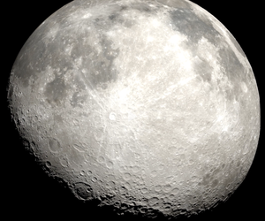
Lunar Landing Site NavigatorAvanzado · Intermedio
Comparar sitios de alunizaje en el polo sur visualizando las posiciones del Sol y la Tierra: energía y ventanas de comunicación.
Exploración humana · Luna · Software
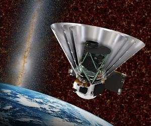
Planet X and SPHERExAvanzado
Una herramienta web pública para recorrer las imágenes del cielo de SPHEREx y ver cómo cambian entre un barrido y otro.
Astrofísica · Planetas y lunas · Software
Space Mission Design GameIntermedio · Principiante
Un juego para diseñar, administrar y simular una misión completa: decisiones de ingeniería con recursos limitados.
Juegos
La Tierra vista desde la Estación Espacial Internacional, filmada por la tripulación de la Expedición 29.
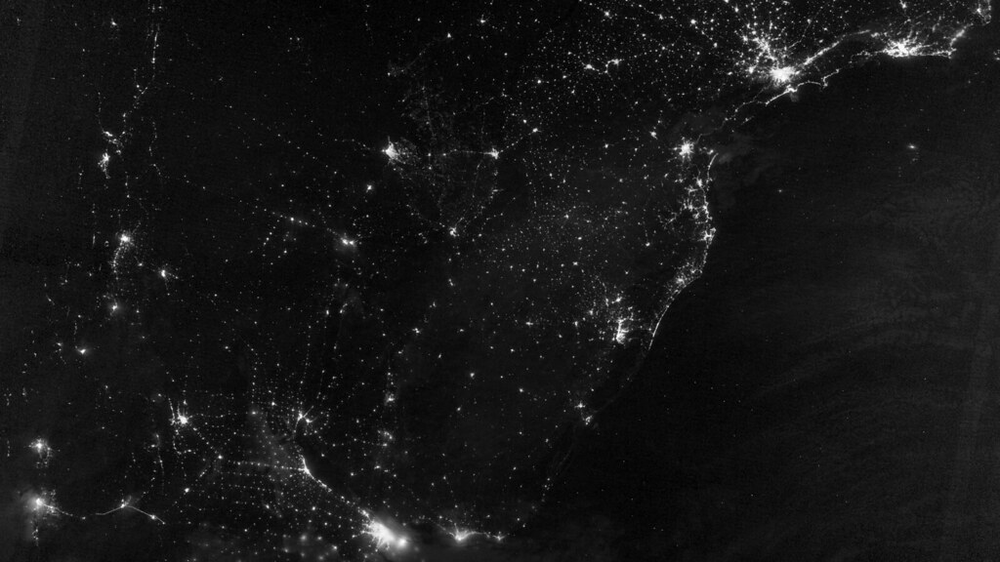
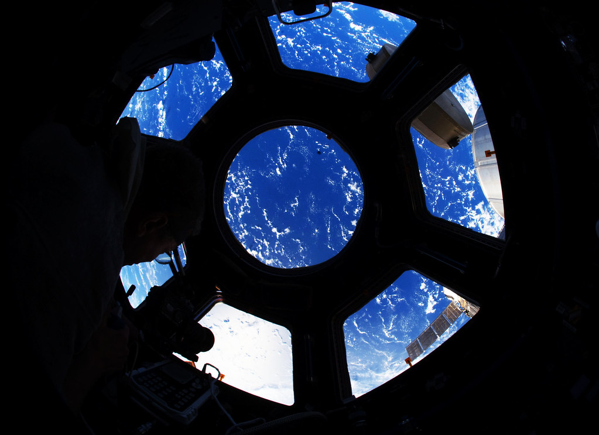
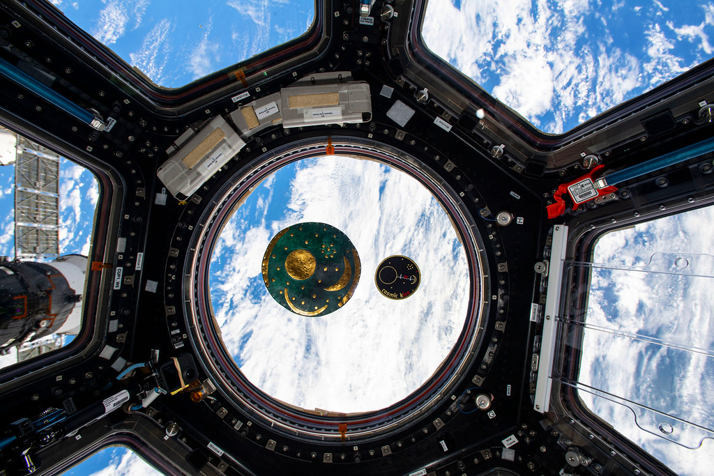
NombreAlejandro Sosa
BaseSanta Cruz de la Sierra, Bolivia
OficioSoftware y producto
Llevo años construyendo cosas con código: un bot que monitorea inmuebles, landings para podcasts, un call center ciudadano que atendió más de 50.000 casos en dos años. Ahora quiero ver qué sale de dos días seguidos con datos de la NASA.
Proyectos y redes
Los avances quedan en el diario; los videos, en mi canal.
Leer el diario